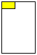
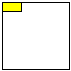
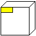
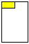
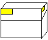
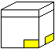

|
Container Type |
Recommended
Barcode Location |
| Bound
materials |
Upper
left corner
Option for items that should not have barcodes on item use
a barcode wrapper. |
| 4-flap
folder/portfolio |
Upper
left corner |
| envelope |
Orient the envelope so the flap is at the upper back side and position the barcode on the upper left corner of the front |
| Phase
box |
Upper
left corner |
| CD & DVD Jewel Case |
Upper
left corner of the rear cover. If CD & liner notes have Separate
item records, they get separate barcodes. |
Audio
Discs
[LP album covers] |
Upper
left corner.
Options for artifactual item is a barcode wrapper. |
Audio
Tape Cassettes
including DAT |
Front,
top (short end) |
All Open Reels stored in boxes
if they fit in trays. |
Upper
left edge of box |
| Video
cassettes |
Upper
left corner |
| Microfilm
boxes |
Top
edge of box [Location for ReCAP] |
All Open Reel film
in cans(stored on edge) |
On
the edge |
Document
boxes
[legal or letter size, 5" or 2.5" wide] |
 Adjacent sides of a box in the upper left corner
Note: one of the barcodes should be on the end of the box that has the pull-cord |
Standard
Box
[Paige/Record cartons]
These are stored directly on shelf, no tray. |
Adjacent sides of a box in the lower right corner |
Flat
box/pizza box.
Other terms used to describe such a box: clamshell, telescoping,
newspaper. These are stored flat directly on shelf. |
Adjacent sides of a box in the lower right corner |